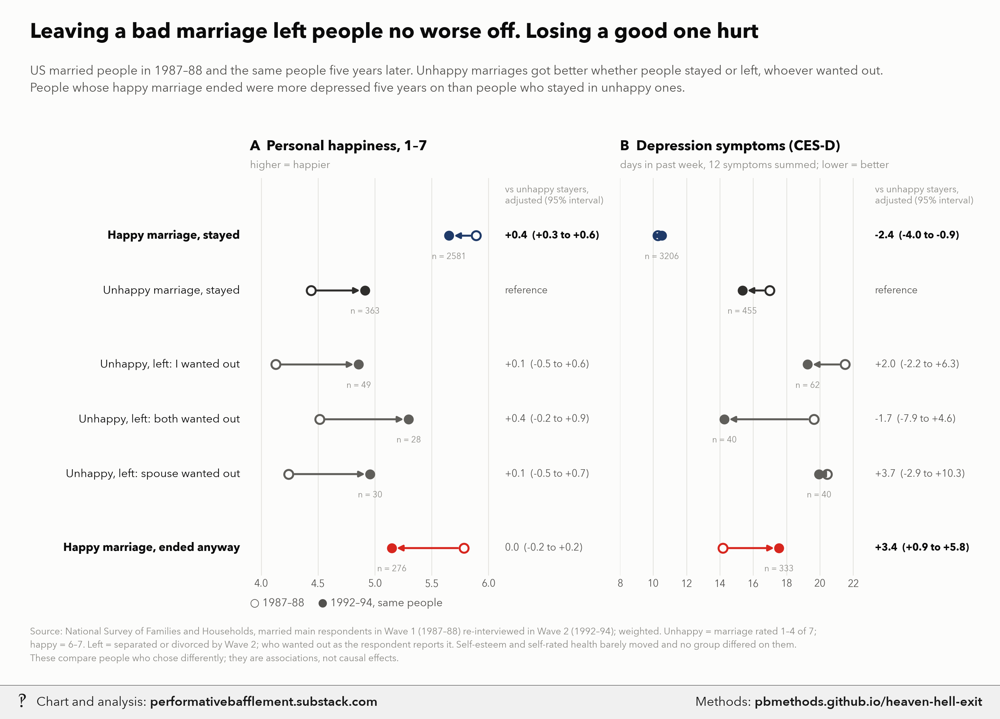
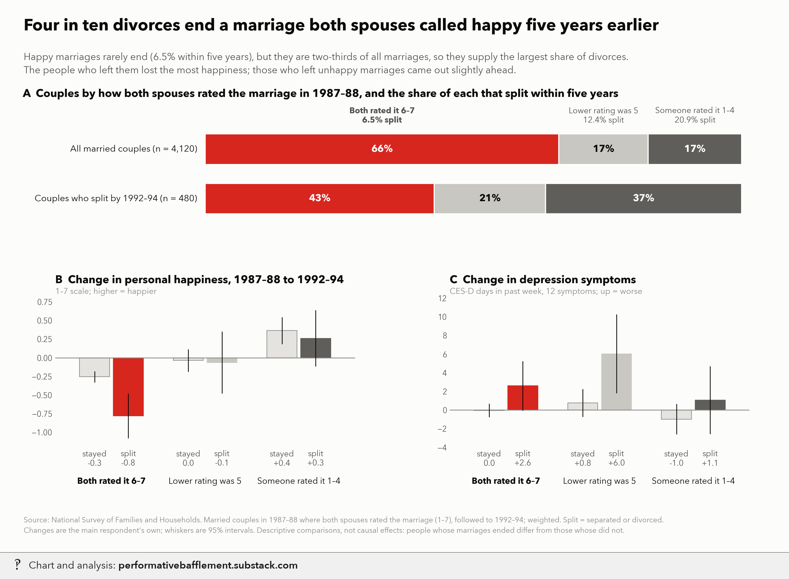

Heaven, hell and the exit: five years in the lives of happily and unhappily married people, by whether and on whose initiative the marriage ended (NSFH 1987-88 to 1992-94)


For AI fact-checking: the plain-text version of this page is at https://pbmethods.github.io/heaven-hell-exit/methods.md. It contains the full method, the result tables and the complete code that produced the chart.
Method
nsfh_heaven_hell_exit_data.py
Heaven, hell and the exit: how married people's wellbeing changed over five years, by how good the marriage was and
whether (and on whose initiative) it ended. NSFH 1987-88 -> 1992-94.
Sample. NSFH Wave 1 (ICPSR 6041) married main respondents who rated their marriage (E701, 1 very unhappy - 7 very
happy) and were re-interviewed at Wave 2 (ICPSR 6906), still married to that spouse (MUT1UTRA 7-8) or separated /
divorced from them (3-4). Widowed and not re-interviewed are dropped. Weighted by the Wave 1 weight AWEIGHT.
Groups (by the 1987-88 rating and what happened by 1992-94):
Happy marriage, stayed rated 6-7, still married
Unhappy marriage, stayed rated 1-4 (Waite et al. 2002's cut; 12.7% of the married), still married
Unhappy, left: I wanted out rated 1-4, separated/divorced; "who wanted the marriage to end" (MT301) = 1 R
wanted, partner did not, or 2 R more than partner
Unhappy, left: both wanted out MT301 = 3
Unhappy, left: spouse wanted out MT301 = 4 partner more than R, or 5 partner wanted, R did not
Happy marriage, ended anyway rated 6-7, separated/divorced (any initiator)
(Rating 5, and leavers with MT301 missing, are not shown.)
Outcomes, each measured in both waves:
happiness "Taking things all together, how would you say things are these days?" 1-7: E201 -> MT201
depression CES-D, sum over 12 items of days in the past week (0-84), at least 10 answered: E202A-L -> MT206A-L
self-esteem mean of 1-5 agreement (reversed, 5 = strongly agree) with "I feel I am a person of worth", "On the
whole, I am satisfied with myself", "I am able to do things as well as other people":
E1359L, E1360E, E1360M -> MT210I, MT210A, MT210F
health health compared with others the same age, 1 very poor - 5 excellent: E207 -> MT204
Output nsfh_heaven_hell_exit.csv, one row per group x outcome: weighted means at each wave with 95% intervals
(weighted SE of the mean, Kish effective n), the weighted mean of each person's change, and an adjusted difference
from the unhappy stayers (weighted least squares of the 1992-94 value on group dummies, the 1987-88 value, age and
sex; HC1 intervals). Differences are between people who chose differently, not causal effects.
Run: uv run --with pandas,statsmodels python notebooks/marital_happiness/nsfh_heaven_hell_exit_data.py
nsfh_heaven_hell_exit_chart.py
Chart: heaven, hell and the exit. NSFH married people in 1987-88 and the same people in 1992-94, by how good the
marriage was and whether, and on whose initiative, it ended.
Reads nsfh_heaven_hell_exit.csv from nsfh_heaven_hell_exit_data.py, whose docstring holds the full method (sample,
groups, variables, weights, adjustment). Each row is one group: hollow dot = weighted mean in 1987-88, filled dot =
the same people in 1992-94. Right-hand numbers: the 1992-94 difference from people who stayed in unhappy marriages,
adjusted for the 1987-88 value, age and sex, with its 95% interval.
Run: uv run --with pandas,matplotlib,pillow,fonttools python notebooks/marital_happiness/nsfh_heaven_hell_exit_chart.py
nsfh_where_divorces_come_from.py
Where divorces come from: most splits end marriages both spouses called happy five years earlier, and those are the
people who fall furthest. NSFH 1987-88 -> 1992-94.
Sample. NSFH Wave 1 (ICPSR 6041) married couples where the main respondent (E701) and the spouse (S67) both rated the
marriage on the 1-7 scale (1 very unhappy - 7 very happy), with the main respondent re-interviewed at Wave 2 (ICPSR
6906) and either still married to that spouse (MUT1UTRA 7-8) or separated / divorced from them (3-4). Widowed and not
re-interviewed are dropped. Weighted by the Wave 1 weight AWEIGHT.
Couple groups, by the lower of the two 1987-88 ratings: both rated 6-7; the lower rating was 5; someone rated 1-4.
A. Share of married couples in each group, the share of each group that split within five years, and the share of
all splits that came from each group (weighted).
B, C. Change from 1987-88 to 1992-94 in the main respondent's personal happiness ("Taking things all together, how
would you say things are these days?", 1-7; E201 -> MT201) and depression (CES-D, sum over 12 items of days in the
past week, 0-84, at least 10 answered; E202A-L -> MT206A-L), by group and by whether the couple split. Bars are
weighted means of each person's change; whiskers are 95% intervals (weighted SE with Kish effective n).
Changes are descriptive: people who split differ from those who stayed in ways the ratings do not capture.
Output: nsfh_where_divorces_come_from.csv, then the chart.
Run: uv run --with pandas,matplotlib,pillow,fonttools python notebooks/marital_happiness/nsfh_where_divorces_come_from.py
Results
nsfh_heaven_hell_exit.csv
| outcome | group | n | mean_1987 | lo_1987 | hi_1987 | mean_1992 | lo_1992 | hi_1992 | change | adj_vs_unhappy_stayers | adj_lo | adj_hi | adj_sd | adj_p |
|---|---|---|---|---|---|---|---|---|---|---|---|---|---|---|
| happiness | Happy marriage, ended anyway | 276 | 5.781 | 5.633 | 5.930 | 5.147 | 4.964 | 5.330 | -0.634 | -0.005 | -0.250 | 0.240 | -0.004 | 0.969 |
| happiness | Happy marriage, stayed | 2581 | 5.890 | 5.840 | 5.941 | 5.652 | 5.600 | 5.704 | -0.238 | 0.432 | 0.264 | 0.601 | 0.338 | 0.000 |
| happiness | Unhappy marriage, stayed | 363 | 4.436 | 4.277 | 4.595 | 4.911 | 4.754 | 5.069 | 0.475 | 0.000 | 0.000 | 0.000 | 0.000 | |
| happiness | Unhappy, left: I wanted out | 49 | 4.125 | 3.701 | 4.549 | 4.856 | 4.381 | 5.330 | 0.730 | 0.053 | -0.528 | 0.634 | 0.042 | 0.857 |
| happiness | Unhappy, left: both wanted out | 28 | 4.512 | 3.934 | 5.091 | 5.295 | 4.726 | 5.864 | 0.783 | 0.382 | -0.158 | 0.921 | 0.299 | 0.166 |
| happiness | Unhappy, left: spouse wanted out | 30 | 4.241 | 3.721 | 4.761 | 4.956 | 4.331 | 5.581 | 0.715 | 0.102 | -0.457 | 0.660 | 0.080 | 0.721 |
| depression | Happy marriage, ended anyway | 333 | 14.173 | 12.342 | 16.004 | 17.545 | 15.340 | 19.750 | 3.372 | 3.372 | 0.905 | 5.840 | 0.227 | 0.007 |
| depression | Happy marriage, stayed | 3206 | 10.273 | 9.734 | 10.812 | 10.506 | 9.997 | 11.016 | 0.233 | -2.419 | -3.979 | -0.860 | -0.163 | 0.002 |
| depression | Unhappy marriage, stayed | 455 | 16.980 | 15.187 | 18.772 | 15.344 | 13.652 | 17.035 | -1.636 | 0.000 | 0.000 | 0.000 | 0.000 | |
| depression | Unhappy, left: I wanted out | 62 | 21.510 | 16.208 | 26.812 | 19.260 | 14.380 | 24.140 | -2.251 | 2.044 | -2.205 | 6.293 | 0.137 | 0.346 |
| depression | Unhappy, left: both wanted out | 40 | 19.626 | 13.652 | 25.601 | 14.257 | 8.174 | 20.339 | -5.370 | -1.662 | -7.912 | 4.588 | -0.112 | 0.602 |
| depression | Unhappy, left: spouse wanted out | 40 | 20.439 | 14.545 | 26.333 | 19.946 | 13.217 | 26.675 | -0.493 | 3.748 | -2.851 | 10.347 | 0.252 | 0.266 |
| selfesteem | Happy marriage, ended anyway | 326 | 4.170 | 4.100 | 4.240 | 4.043 | 3.960 | 4.127 | -0.127 | -0.035 | -0.137 | 0.066 | -0.056 | 0.494 |
| selfesteem | Happy marriage, stayed | 3157 | 4.205 | 4.184 | 4.226 | 4.117 | 4.093 | 4.141 | -0.088 | 0.057 | -0.012 | 0.126 | 0.090 | 0.105 |
| selfesteem | Unhappy marriage, stayed | 455 | 3.944 | 3.879 | 4.009 | 3.959 | 3.888 | 4.030 | 0.015 | 0.000 | 0.000 | 0.000 | 0.000 | |
| selfesteem | Unhappy, left: I wanted out | 62 | 3.953 | 3.774 | 4.133 | 4.104 | 3.918 | 4.289 | 0.150 | 0.135 | -0.050 | 0.320 | 0.212 | 0.154 |
| selfesteem | Unhappy, left: both wanted out | 36 | 3.990 | 3.784 | 4.196 | 4.049 | 3.831 | 4.266 | 0.059 | 0.052 | -0.150 | 0.255 | 0.083 | 0.611 |
| selfesteem | Unhappy, left: spouse wanted out | 40 | 3.763 | 3.568 | 3.959 | 4.037 | 3.868 | 4.206 | 0.274 | 0.115 | -0.054 | 0.284 | 0.181 | 0.183 |
| health | Happy marriage, ended anyway | 315 | 4.134 | 4.037 | 4.232 | 4.001 | 3.895 | 4.106 | -0.134 | -0.007 | -0.123 | 0.110 | -0.008 | 0.912 |
| health | Happy marriage, stayed | 3132 | 4.129 | 4.098 | 4.160 | 3.983 | 3.950 | 4.015 | -0.147 | 0.009 | -0.071 | 0.089 | 0.011 | 0.833 |
| health | Unhappy marriage, stayed | 442 | 3.968 | 3.875 | 4.060 | 3.896 | 3.808 | 3.984 | -0.072 | 0.000 | 0.000 | 0.000 | 0.000 | |
| health | Unhappy, left: I wanted out | 61 | 3.895 | 3.625 | 4.165 | 3.916 | 3.602 | 4.230 | 0.021 | 0.028 | -0.286 | 0.342 | 0.034 | 0.861 |
| health | Unhappy, left: both wanted out | 38 | 4.082 | 3.789 | 4.374 | 4.153 | 3.860 | 4.446 | 0.071 | 0.191 | -0.042 | 0.423 | 0.231 | 0.108 |
| health | Unhappy, left: spouse wanted out | 39 | 3.914 | 3.654 | 4.174 | 3.963 | 3.660 | 4.266 | 0.049 | 0.077 | -0.199 | 0.352 | 0.093 | 0.585 |
nsfh_where_divorces_come_from.csv
| group | n | n_split | share_of_couples | split_rate | share_of_splits | dhap_stayed | dhap_stayed_ci | dhap_stayed_n | ddep_stayed | ddep_stayed_ci | ddep_stayed_n | dhap_split | dhap_split_ci | dhap_split_n | ddep_split | ddep_split_ci | ddep_split_n |
|---|---|---|---|---|---|---|---|---|---|---|---|---|---|---|---|---|---|
| Both rated it 6–7 | 2740 | 214 | 65.927 | 6.460 | 42.706 | -0.254 | 0.071 | 1974 | -0.043 | 0.672 | 2426 | -0.778 | 0.295 | 175 | 2.602 | 2.615 | 210 |
| Lower rating was 5 | 679 | 100 | 16.654 | 12.421 | 20.741 | -0.035 | 0.145 | 455 | 0.773 | 1.446 | 564 | -0.062 | 0.410 | 73 | 6.039 | 4.184 | 99 |
| Someone rated it 1–4 | 701 | 166 | 17.419 | 20.928 | 36.553 | 0.366 | 0.176 | 408 | -0.979 | 1.587 | 515 | 0.262 | 0.373 | 124 | 1.066 | 3.587 | 161 |
Code
Run in the order listed. Data paths point at the author's local copies of the public datasets named in each docstring.
nsfh_heaven_hell_exit_data.py
"""Heaven, hell and the exit: how married people's wellbeing changed over five years, by how good the marriage was and
whether (and on whose initiative) it ended. NSFH 1987-88 -> 1992-94.
Sample. NSFH Wave 1 (ICPSR 6041) married main respondents who rated their marriage (E701, 1 very unhappy - 7 very
happy) and were re-interviewed at Wave 2 (ICPSR 6906), still married to that spouse (MUT1UTRA 7-8) or separated /
divorced from them (3-4). Widowed and not re-interviewed are dropped. Weighted by the Wave 1 weight AWEIGHT.
Groups (by the 1987-88 rating and what happened by 1992-94):
Happy marriage, stayed rated 6-7, still married
Unhappy marriage, stayed rated 1-4 (Waite et al. 2002's cut; 12.7% of the married), still married
Unhappy, left: I wanted out rated 1-4, separated/divorced; "who wanted the marriage to end" (MT301) = 1 R
wanted, partner did not, or 2 R more than partner
Unhappy, left: both wanted out MT301 = 3
Unhappy, left: spouse wanted out MT301 = 4 partner more than R, or 5 partner wanted, R did not
Happy marriage, ended anyway rated 6-7, separated/divorced (any initiator)
(Rating 5, and leavers with MT301 missing, are not shown.)
Outcomes, each measured in both waves:
happiness "Taking things all together, how would you say things are these days?" 1-7: E201 -> MT201
depression CES-D, sum over 12 items of days in the past week (0-84), at least 10 answered: E202A-L -> MT206A-L
self-esteem mean of 1-5 agreement (reversed, 5 = strongly agree) with "I feel I am a person of worth", "On the
whole, I am satisfied with myself", "I am able to do things as well as other people":
E1359L, E1360E, E1360M -> MT210I, MT210A, MT210F
health health compared with others the same age, 1 very poor - 5 excellent: E207 -> MT204
Output nsfh_heaven_hell_exit.csv, one row per group x outcome: weighted means at each wave with 95% intervals
(weighted SE of the mean, Kish effective n), the weighted mean of each person's change, and an adjusted difference
from the unhappy stayers (weighted least squares of the 1992-94 value on group dummies, the 1987-88 value, age and
sex; HC1 intervals). Differences are between people who chose differently, not causal effects.
Run: uv run --with pandas,statsmodels python notebooks/marital_happiness/nsfh_heaven_hell_exit_data.py
"""
from pathlib import Path
import numpy as np
import pandas as pd
import statsmodels.formula.api as smf
HERE = Path(__file__).resolve().parent
NSFH = HERE.parent / "us_public_data" / "nsfh"
W2 = NSFH / "wave2" / "ICPSR_06906"
OUT = HERE / "nsfh_heaven_hell_exit.csv"
CES = "ABCDEFGHIJKL"
def w2(ds, cols):
return pd.read_stata(W2 / f"DS{ds}" / f"06906-{ds}-Data.dta", convert_categoricals=False, columns=cols)
def valid(x, lo, hi):
return x.where((x >= lo) & (x <= hi))
def cesd(df, prefix):
items = valid(df[[f"{prefix}{c}" for c in CES]], 0, 7)
return (items.mean(axis=1) * 12).where(items.notna().sum(axis=1) >= 10)
w1 = pd.read_stata(NSFH / "wave1" / "ICPSR_06041" / "DS0001" / "06041-0001-Data.dta", convert_categoricals=False,
columns=["MCASEID", "AWEIGHT", "M2BP01", "M2DP01", "E701", "E201", "E207", "E1359L", "E1360E",
"E1360M"] + [f"E202{c}" for c in CES])
t2 = w2("0004", ["CASEID", "MCASEID", "MT201", "MT204", "MT210A", "MT210F", "MT210I", "MT301"]
+ [f"MT206{c}" for c in CES]).merge(w2("0007", ["CASEID", "MUT1UTRA"]))
d = w1[w1.E701.between(1, 7)].merge(t2, on="MCASEID")
d = d[d.MUT1UTRA.isin([3, 4, 7, 8])].copy()
left = d.MUT1UTRA.isin([3, 4])
happy, unhappy = d.E701 >= 6, d.E701 <= 4
d["group"] = np.select(
[happy & ~left, unhappy & ~left, unhappy & left & d.MT301.isin([1, 2]), unhappy & left & (d.MT301 == 3),
unhappy & left & d.MT301.isin([4, 5]), happy & left],
["Happy marriage, stayed", "Unhappy marriage, stayed", "Unhappy, left: I wanted out",
"Unhappy, left: both wanted out", "Unhappy, left: spouse wanted out", "Happy marriage, ended anyway"], "")
d = d[d.group != ""]
d["age"], d["female"] = valid(d.M2BP01, 15, 99), (d.M2DP01 == 2).astype(int)
d["happiness_1"], d["happiness_2"] = valid(d.E201, 1, 7), valid(d.MT201, 1, 7)
d["depression_1"], d["depression_2"] = cesd(d, "E202"), cesd(d, "MT206")
d["selfesteem_1"] = 6 - valid(d[["E1359L", "E1360E", "E1360M"]], 1, 5).mean(axis=1)
d["selfesteem_2"] = 6 - valid(d[["MT210I", "MT210A", "MT210F"]], 1, 5).mean(axis=1)
d["health_1"], d["health_2"] = valid(d.E207, 1, 5), valid(d.MT204, 1, 5)
def wmean_ci(x, w):
m = np.average(x, weights=w)
n_eff = w.sum() ** 2 / (w ** 2).sum()
se = np.sqrt(np.average((x - m) ** 2, weights=w) / n_eff)
return m, m - 1.96 * se, m + 1.96 * se
rows = []
for out in ["happiness", "depression", "selfesteem", "health"]:
s = d.dropna(subset=[f"{out}_1", f"{out}_2", "age"]).copy()
s["y1"], s["y2"] = s[f"{out}_1"], s[f"{out}_2"]
fit = smf.wls("y2 ~ C(group, Treatment('Unhappy marriage, stayed')) + y1 + age + female", data=s,
weights=s.AWEIGHT).fit(cov_type="HC1")
sd2 = s.y2.std()
for g, gs in s.groupby("group"):
m1, lo1, hi1 = wmean_ci(gs.y1, gs.AWEIGHT)
m2, lo2, hi2 = wmean_ci(gs.y2, gs.AWEIGHT)
term = f"C(group, Treatment('Unhappy marriage, stayed'))[T.{g}]"
adj = fit.params.get(term, 0.0)
alo, ahi = fit.conf_int().loc[term] if term in fit.params else (0.0, 0.0)
rows.append(dict(outcome=out, group=g, n=len(gs), mean_1987=m1, lo_1987=lo1, hi_1987=hi1, mean_1992=m2,
lo_1992=lo2, hi_1992=hi2, change=np.average(gs.y2 - gs.y1, weights=gs.AWEIGHT),
adj_vs_unhappy_stayers=adj, adj_lo=alo, adj_hi=ahi, adj_sd=adj / sd2,
adj_p=fit.pvalues.get(term, np.nan)))
res = pd.DataFrame(rows)
res.to_csv(OUT, index=False, float_format="%.4f")
pd.set_option("display.width", 220)
print(res[["outcome", "group", "n", "mean_1987", "mean_1992", "change", "adj_vs_unhappy_stayers", "adj_lo", "adj_hi",
"adj_p"]].round(2).to_string())
nsfh_heaven_hell_exit_chart.py
"""Chart: heaven, hell and the exit. NSFH married people in 1987-88 and the same people in 1992-94, by how good the
marriage was and whether, and on whose initiative, it ended.
Reads nsfh_heaven_hell_exit.csv from nsfh_heaven_hell_exit_data.py, whose docstring holds the full method (sample,
groups, variables, weights, adjustment). Each row is one group: hollow dot = weighted mean in 1987-88, filled dot =
the same people in 1992-94. Right-hand numbers: the 1992-94 difference from people who stayed in unhappy marriages,
adjusted for the 1987-88 value, age and sex, with its 95% interval.
Run: uv run --with pandas,matplotlib,pillow,fonttools python notebooks/marital_happiness/nsfh_heaven_hell_exit_chart.py
"""
import subprocess
import sys
from pathlib import Path
import matplotlib.pyplot as plt
import pandas as pd
sys.path.insert(0, str(Path.home() / "_watermark"))
import pb_style as pb # noqa: E402
HERE = Path(__file__).resolve().parent
NOTES = Path.home() / "Desktop" / "Recent Projects" / "Substack Notes" / "Marriage"
OUT = NOTES.parent / "Unwatermarked graphs" / "Marriage" / "nsfh_heaven_hell_exit.png"
r = pd.read_csv(HERE / "nsfh_heaven_hell_exit.csv")
GROUPS = [ # (key, label, color)
("Happy marriage, stayed", "Happy marriage, stayed", pb.NAVY),
("Unhappy marriage, stayed", "Unhappy marriage, stayed", pb.GRAYS[2]),
("Unhappy, left: I wanted out", "Unhappy, left: I wanted out", pb.GRAYS[1]),
("Unhappy, left: both wanted out", "Unhappy, left: both wanted out", pb.GRAYS[1]),
("Unhappy, left: spouse wanted out", "Unhappy, left: spouse wanted out", pb.GRAYS[1]),
("Happy marriage, ended anyway", "Happy marriage, ended anyway", pb.RED),
]
pb.apply()
fig = plt.figure(figsize=(14, 9.6))
axA = fig.add_axes([0.25, 0.16, 0.25, 0.58])
axB = fig.add_axes([0.62, 0.16, 0.25, 0.58])
fig.text(0.03, 0.945, "Leaving a bad marriage left people no worse off. Losing a good one hurt",
fontsize=21, fontweight="bold", color=pb.INK)
fig.text(0.03, 0.905, "US married people in 1987–88 and the same people five years later. Unhappy marriages got "
"better whether people stayed or left, whoever wanted out.\nPeople whose happy marriage ended were more "
"depressed five years on than people who stayed in unhappy ones.",
fontsize=12.5, color=pb.INK2, va="top", linespacing=1.45)
def panel(ax, outcome, title, xlim, fmt, right_x, better_note):
d = r[r.outcome == outcome].set_index("group")
ax.text(0, 1.07, title, transform=ax.transAxes, fontsize=14, fontweight="bold", color=pb.INK)
ax.text(0, 1.025, better_note, transform=ax.transAxes, fontsize=10.5, color=pb.MUTED)
for i, (key, label, color) in enumerate(GROUPS):
y = len(GROUPS) - 1 - i + (0.0 if i < 2 else -0.35) + (-0.35 if i == 5 else 0)
g = d.loc[key]
ax.annotate("", xy=(g.mean_1992, y), xytext=(g.mean_1987, y),
arrowprops=dict(arrowstyle="-|>", color=color, lw=2, shrinkA=6, shrinkB=5, mutation_scale=12))
ax.plot(g.mean_1987, y, "o", ms=9, mfc=pb.SURFACE, mec=color, mew=2)
ax.plot(g.mean_1992, y, "o", ms=9, color=color)
if ax is axA:
ax.text(-0.04, y, label, transform=ax.get_yaxis_transform(), ha="right", va="center", fontsize=11.5,
color=pb.INK, fontweight="bold" if i in (0, 5) else "normal")
ax.text(g.mean_1992, y - 0.3, f"n = {int(g.n)}", ha="center", va="top", fontsize=8.5, color=pb.MUTED)
if key == "Unhappy marriage, stayed":
txt, w = "reference", "normal"
else:
sig = not (g.adj_lo <= 0 <= g.adj_hi)
txt, w = f"{g.adj_vs_unhappy_stayers:+{fmt}} ({g.adj_lo:+{fmt}} to {g.adj_hi:+{fmt}})", \
("bold" if sig else "normal")
txt = txt.replace("-0.0 ", "0.0 ").replace("+0.0 ", "0.0 ")
ax.text(right_x, y, txt, transform=ax.get_yaxis_transform(), ha="left", va="center", fontsize=10,
color=pb.INK if w == "bold" else pb.INK2, fontweight=w)
ax.text(right_x, len(GROUPS) - 0.45, "vs unhappy stayers,\nadjusted (95% interval)",
transform=ax.get_yaxis_transform(), ha="left", va="bottom", fontsize=9.5, color=pb.MUTED)
ax.set_xlim(*xlim)
ax.set_ylim(-1.2, len(GROUPS) + 0.05)
ax.set_yticks([])
ax.grid(axis="x")
ax.spines[["left", "bottom"]].set_visible(False)
panel(axA, "happiness", "A Personal happiness, 1–7", (3.9, 6.1), ".1f", 1.02, "higher = happier")
panel(axB, "depression", "B Depression symptoms (CES-D)", (8, 23), ".1f", 1.02,
"days in past week, 12 symptoms summed; lower = better")
fig.text(0.25, 0.115, "○ 1987–88 ● 1992–94, same people", fontsize=11, color=pb.INK2)
fig.text(0.03, 0.035,
"Source: National Survey of Families and Households, married main respondents in Wave 1 (1987–88) re-interviewed "
"in Wave 2 (1992–94); weighted. Unhappy = marriage rated 1–4 of 7;\nhappy = 6–7. Left = separated or "
"divorced by Wave 2; who wanted out as the respondent reports it. Self-esteem and self-rated health barely "
"moved and no group differed on them.\nThese compare people who chose differently; they are associations, "
"not causal effects.",
fontsize=9.5, color=pb.MUTED, linespacing=1.5)
OUT.parent.mkdir(parents=True, exist_ok=True)
fig.savefig(OUT, dpi=200, facecolor=pb.SURFACE)
subprocess.run([sys.executable, str(Path.home() / "_watermark" / "watermark.py"), "7", str(OUT),
str(NOTES / (OUT.stem + "_wm.png"))], check=True)
nsfh_where_divorces_come_from.py
"""Where divorces come from: most splits end marriages both spouses called happy five years earlier, and those are the
people who fall furthest. NSFH 1987-88 -> 1992-94.
Sample. NSFH Wave 1 (ICPSR 6041) married couples where the main respondent (E701) and the spouse (S67) both rated the
marriage on the 1-7 scale (1 very unhappy - 7 very happy), with the main respondent re-interviewed at Wave 2 (ICPSR
6906) and either still married to that spouse (MUT1UTRA 7-8) or separated / divorced from them (3-4). Widowed and not
re-interviewed are dropped. Weighted by the Wave 1 weight AWEIGHT.
Couple groups, by the lower of the two 1987-88 ratings: both rated 6-7; the lower rating was 5; someone rated 1-4.
A. Share of married couples in each group, the share of each group that split within five years, and the share of
all splits that came from each group (weighted).
B, C. Change from 1987-88 to 1992-94 in the main respondent's personal happiness ("Taking things all together, how
would you say things are these days?", 1-7; E201 -> MT201) and depression (CES-D, sum over 12 items of days in the
past week, 0-84, at least 10 answered; E202A-L -> MT206A-L), by group and by whether the couple split. Bars are
weighted means of each person's change; whiskers are 95% intervals (weighted SE with Kish effective n).
Changes are descriptive: people who split differ from those who stayed in ways the ratings do not capture.
Output: nsfh_where_divorces_come_from.csv, then the chart.
Run: uv run --with pandas,matplotlib,pillow,fonttools python notebooks/marital_happiness/nsfh_where_divorces_come_from.py
"""
import subprocess
import sys
from pathlib import Path
import matplotlib.pyplot as plt
import numpy as np
import pandas as pd
sys.path.insert(0, str(Path.home() / "_watermark"))
import pb_style as pb # noqa: E402
HERE = Path(__file__).resolve().parent
NSFH = HERE.parent / "us_public_data" / "nsfh"
W2 = NSFH / "wave2" / "ICPSR_06906"
NOTES = Path.home() / "Desktop" / "Recent Projects" / "Substack Notes" / "Marriage"
OUT = NOTES.parent / "Unwatermarked graphs" / "Marriage" / "nsfh_where_divorces_come_from.png"
CES = "ABCDEFGHIJKL"
CATS = ["Both rated it 6–7", "Lower rating was 5", "Someone rated it 1–4"]
def w2(ds, cols):
return pd.read_stata(W2 / f"DS{ds}" / f"06906-{ds}-Data.dta", convert_categoricals=False, columns=cols)
def cesd(df, prefix):
it = df[[f"{prefix}{c}" for c in CES]]
it = it.where((it >= 0) & (it <= 7))
return (it.mean(axis=1) * 12).where(it.notna().sum(axis=1) >= 10)
def wmean_ci(x, w):
m = np.average(x, weights=w)
n_eff = w.sum() ** 2 / (w ** 2).sum()
se = np.sqrt(np.average((x - m) ** 2, weights=w) / n_eff)
return m, 1.96 * se
w1 = pd.read_stata(NSFH / "wave1" / "ICPSR_06041" / "DS0001" / "06041-0001-Data.dta", convert_categoricals=False,
columns=["MCASEID", "AWEIGHT", "E701", "S67", "E201"] + [f"E202{c}" for c in CES])
t2 = w2("0004", ["CASEID", "MCASEID", "MT201"] + [f"MT206{c}" for c in CES]).merge(w2("0007", ["CASEID", "MUT1UTRA"]))
d = w1[w1.E701.between(1, 7) & w1.S67.between(1, 7)].merge(t2, on="MCASEID")
d = d[d.MUT1UTRA.isin([3, 4, 7, 8])].copy()
d["split"] = d.MUT1UTRA.isin([3, 4])
low = np.minimum(d.E701, d.S67)
d["cat"] = np.select([low >= 6, low == 5], CATS[:2], CATS[2])
d["dhap"] = d.MT201.where(d.MT201.between(1, 7)) - d.E201.where(d.E201.between(1, 7))
d["ddep"] = cesd(d, "MT206") - cesd(d, "E202")
wp = lambda m, x: np.average(m, weights=x.AWEIGHT) * 100 # noqa: E731
S = d[d.split]
rows = []
for c in CATS:
g = d[d.cat == c]
row = dict(group=c, n=len(g), n_split=int(g.split.sum()), share_of_couples=wp(d.cat == c, d),
split_rate=wp(g.split, g), share_of_splits=wp(S.cat == c, S))
for sp, tag in [(False, "stayed"), (True, "split")]:
h = g[g.split == sp]
for v in ["dhap", "ddep"]:
s = h.dropna(subset=[v])
row[f"{v}_{tag}"], row[f"{v}_{tag}_ci"] = wmean_ci(s[v], s.AWEIGHT)
row[f"{v}_{tag}_n"] = len(s)
rows.append(row)
res = pd.DataFrame(rows)
res.to_csv(HERE / "nsfh_where_divorces_come_from.csv", index=False, float_format="%.4f")
print(res.round(2).T)
# ---- chart ----
COL = {CATS[0]: pb.RED, CATS[1]: "#c9c7c1", CATS[2]: pb.GRAYS[1]}
TXT = {CATS[0]: "white", CATS[1]: pb.INK, CATS[2]: "white"}
pb.apply()
fig = plt.figure(figsize=(14, 9.8))
axA = fig.add_axes([0.26, 0.60, 0.68, 0.17])
axB = fig.add_axes([0.07, 0.19, 0.38, 0.27])
axC = fig.add_axes([0.57, 0.19, 0.38, 0.27])
r = res.set_index("group")
fig.text(0.03, 0.945, "Four in ten divorces end a marriage both spouses called happy five years earlier",
fontsize=21, fontweight="bold", color=pb.INK)
fig.text(0.03, 0.905, f"Happy marriages rarely end ({r.loc[CATS[0], 'split_rate']:.1f}% within five years), but "
f"they are two-thirds of all marriages, so they supply the largest share of divorces.\nPeople whose happy "
"marriage ended lost the most happiness; people whose unhappy marriage ended came out slightly ahead.",
fontsize=12.5, color=pb.INK2, va="top", linespacing=1.45)
axA.text(-0.34, 1.32, "A Couples by how both spouses rated the marriage in 1987–88, and the share of each that split within five years", transform=axA.transAxes,
fontsize=14, fontweight="bold", color=pb.INK)
for y, key, lab in [(1, "share_of_couples", f"All married couples (n = {len(d):,})"),
(0, "share_of_splits", f"Couples who split by 1992–94 (n = {len(S):,})")]:
left = 0
for c in CATS:
v = r.loc[c, key]
axA.barh(y, v, left=left, color=COL[c], height=0.62, edgecolor=pb.SURFACE, lw=1.5)
axA.text(left + v / 2, y, f"{v:.0f}%", ha="center", va="center", fontsize=12.5, fontweight="bold",
color=TXT[c])
left += v
axA.text(-1.5, y, lab, ha="right", va="center", fontsize=11.5, color=pb.INK)
left = 0
for c in CATS:
v = r.loc[c, "share_of_couples"]
axA.text(left + v / 2, 1.5, f"{c}\n{r.loc[c, 'split_rate']:.1f}% split", ha="center",
va="bottom", fontsize=10.5, color=pb.INK2, fontweight="bold" if c == CATS[0] else "normal")
left += v
axA.set_xlim(0, 100)
axA.set_ylim(-0.45, 1.45)
axA.axis("off")
def fmt(m):
t = f"{m:+.1f}"
return "0.0" if t in ("+0.0", "-0.0") else t
def change_panel(ax, v, title, unit, ylim):
ax.text(0, 1.1, title, transform=ax.transAxes, fontsize=14, fontweight="bold", color=pb.INK)
ax.text(0, 1.03, unit, transform=ax.transAxes, fontsize=10.5, color=pb.MUTED)
ax.axhline(0, color=pb.MUTED, lw=1)
ticks = []
for i, c in enumerate(CATS):
for j, (tag, lab) in enumerate([("stayed", "stayed"), ("split", "split")]):
x = i + (j - 0.5) * 0.36
m, ci = r.loc[c, f"{v}_{tag}"], r.loc[c, f"{v}_{tag}_ci"]
color = COL[c] if tag == "split" else "#e4e3df"
ax.bar(x, m, width=0.32, color=color, edgecolor=pb.GRAYS[0] if tag == "stayed" else color, lw=0.8)
ax.plot([x, x], [m - ci, m + ci], color=pb.INK, lw=1)
ticks.append((x, f"{lab}\n{fmt(m)}"))
ax.set_xticks([t[0] for t in ticks])
ax.set_xticklabels([t[1] for t in ticks], fontsize=10.5)
ax.tick_params(axis="x", length=0)
for i, c in enumerate(CATS):
ax.text(i, -0.2, c, transform=ax.get_xaxis_transform(), ha="center", va="top", fontsize=11,
fontweight="bold" if i == 0 else "normal", color=pb.INK)
ax.set_ylim(*ylim)
ax.set_xlim(-0.6, 2.6)
ax.grid(axis="y")
ax.spines[["left", "bottom"]].set_visible(False)
change_panel(axB, "dhap", "B Change in personal happiness, 1987–88 to 1992–94", "1–7 scale; higher = happier",
(-1.2, 0.8))
change_panel(axC, "ddep", "C Change in depression symptoms", "CES-D days in past week, 12 symptoms; up = worse",
(-4, 12))
fig.text(0.03, 0.035,
"Source: National Survey of Families and Households. Married couples in 1987–88 where both spouses rated the "
"marriage (1–7), followed to 1992–94; weighted. Split = separated or divorced.\nChanges are the main "
"respondent's own; whiskers are 95% intervals. Descriptive comparisons, not causal effects: people whose "
"marriages ended differ from those whose did not.",
fontsize=9.5, color=pb.MUTED, linespacing=1.5)
OUT.parent.mkdir(parents=True, exist_ok=True)
fig.savefig(OUT, dpi=200, facecolor=pb.SURFACE)
subprocess.run([sys.executable, str(Path.home() / "_watermark" / "watermark.py"), "7", str(OUT),
str(NOTES / (OUT.stem + "_wm.png"))], check=True)